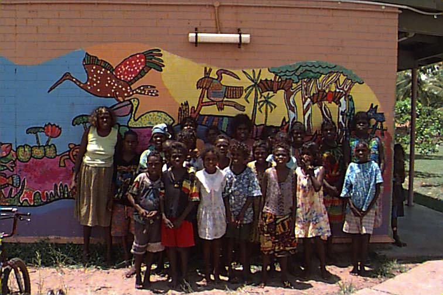

<!--This file created 9/12/97 9:51 by Claris Home Page version 2.0-->
<HTML>
<!-- Mirrored from www.nyu.edu/web.communications/jimtest/trees/home.html by HTTrack Website Copier/3.x [XR&CO'2014], Mon, 08 Feb 2021 15:12:23 GMT -->
<!-- Added by HTTrack --><meta http-equiv="content-type" content="text/html;charset=UTF-8" /><!-- /Added by HTTrack -->
<HEAD>
   <TITLE>Trees</TITLE>
   <META NAME=GENERATOR CONTENT="Claris Home Page 2.0">
   <X-SAS-WINDOW TOP=44 BOTTOM=476 LEFT=4 RIGHT=590>
</HEAD>
<BODY background="sunflowr.gif">

<H1><CENTER><FONT SIZE="+2">GUN-JONG</FONT></CENTER></H1>

<P><CENTER></CENTER></P>

<P>We are from Maningrida. We are in Marrchila class, our language is
Burarra. Marrchila means crocodile.</P>

<P>Maningrida is 450km from Darwin in the Northern Territory,
Australia.</P>

<P>We have pictures and texts about special trees in our community .
</P>

<OL>
   <LI><A HREF="manggu.html">MANGGU</A>
   
   <LI><A HREF="jumbarrich.html">JUMBARRICH</A>
   
   <LI><A HREF="linksout.html">LINKS</A>
</OL>

<DL>
   <DT><CENTER><A HREF="mailto:mancec@ozemail.com.au">E-mail us.</A>
   </CENTER>
</DL>
</BODY>
<!-- Mirrored from www.nyu.edu/web.communications/jimtest/trees/home.html by HTTrack Website Copier/3.x [XR&CO'2014], Mon, 08 Feb 2021 15:12:28 GMT -->
</HTML>
